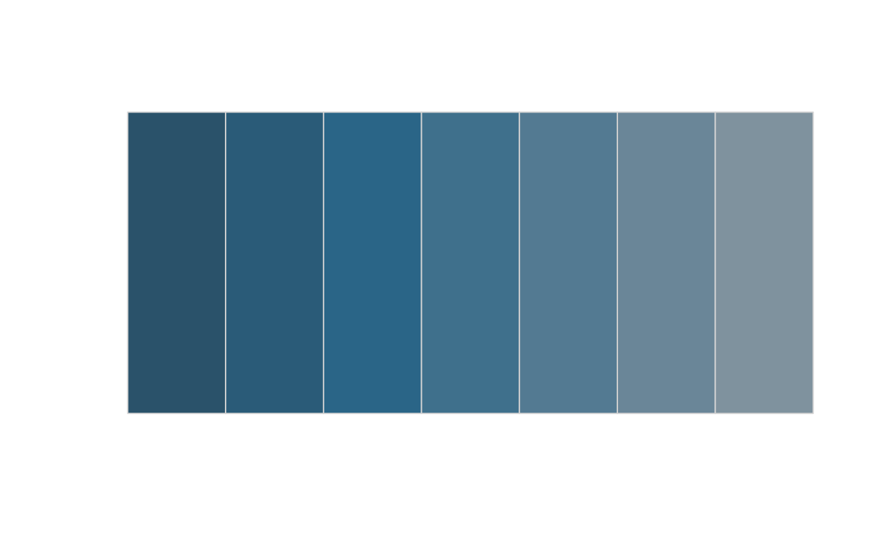

Neben Funktionen zur Excel-Dateierzeugung und Visualisierungen
beinhaltet statR auch zwei weitere Hilfsfunktionen.
quick_sum() erleichtert das Erstellen von deskriptiven
Übersichtstabellen. interpolate2() kann zur Generierung von
individualisierten Farbpaletten verwendet werden.
Mit der Funktion quick_sum() können deskriptive
Statistiken berechnet werden. Je nach Spezifikation des
stats-Arguments wird eine andere Anzahl Statistiken
angezeigt (Durchschnitt, Median, Standardabweichung, Quantile, etc.).
Siehe ?quick_sum().
Im Beispiel unten wird mittels der Funktion berechnet, wie viele
mpg (Miles/(US) gallon) die Autos abhängig von der
Zylinderanzahl (cyl) und ihres Motorentyps
(vs; ‘V-shaped’ oder ‘straight’) haben. Ausgegeben werden
die Ausprägungen der Gruppierungsvariablen, die Anzahl sowie der
Durchschnitt und die Quartile.
library(statR)
quick_sum(df = mtcars, var = mpg, cyl, vs, stats = "base", protect = FALSE)
#> # A tibble: 5 × 7
#> cyl vs Anzahl mean_mpg q25_mpg med_mpg q75_mpg
#> <dbl> <dbl> <int> <dbl> <dbl> <dbl> <dbl>
#> 1 4 0 1 26 26 26 26
#> 2 4 1 10 26.7 22.8 25.8 30.4
#> 3 6 0 3 20.6 20.4 21 21
#> 4 6 1 4 19.1 18.0 18.6 19.8
#> 5 8 0 14 15.1 14.4 15.2 16.2Mit der Funktion interpolate2() können neue Farbpaletten
erstellt werden, indem zhpal-Paletten mit einer oder
mehreren Farben interpoliert werden. Die Funktion baut auf
grDevices::colorRamp() auf. Mit dem Argument
degree kann die Stärke der Interpolation bestimmt werden
(von 1 bis 7) und mit dem Argument number die Anzahl der
Farben, die die neue Palette enthalten soll.
Im Beispiel unten wird die Palette zhpal$zhblue mit
schwarz (“#000000”) interpoliert.
new <- interpolate2(palette = zhpal$zhblue, color = c("#000000"), degree = 3,
number = 7)So sieht die ursprüngliche Palette aus:
display(zhpal$zhblue)Zum direkten Vergleich die interpolierte Palette:
display(new)